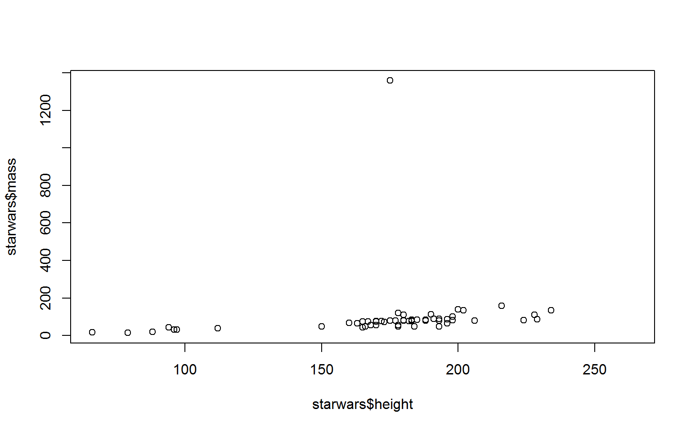
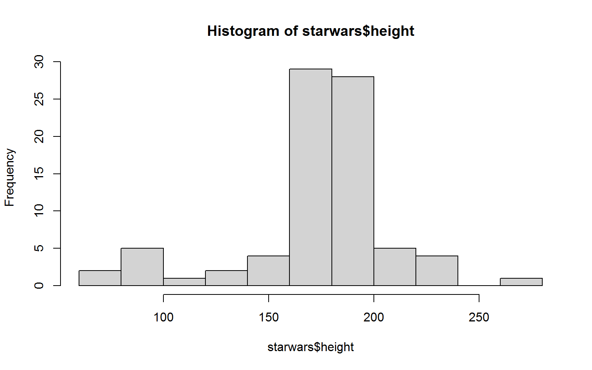
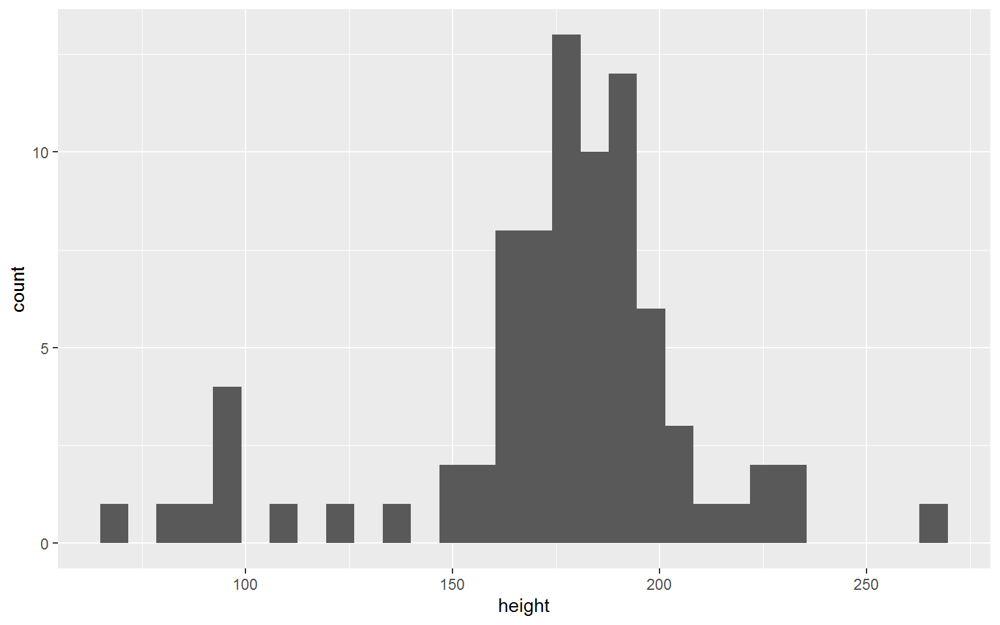

Summary
Workshop introduction
Statistical Programming with R
Summary
Workshop introduction
anova(), then you just type ?anova or help(anova) in the console.?? followed by your search criterion. For example ??anova returns a list of all help pages that contain the word ‘anova’<-a <- c(1, 8, 42, pi, 2^3, 1)
b <- 0:5
c <- rep( c("Hi", "there"), 3)
D <- as.data.frame(cbind(a,b,c))
Vectors and character vectors
c(1,2,3,4,5)
## [1] 1 2 3 4 5
1:5
## [1] 1 2 3 4 5
as.character(1:5)
## [1] "1" "2" "3" "4" "5"
Data sets for R
D <- as.data.frame(cbind(a,b,c)) D
## a b c ## 1 1 0 Hi ## 2 8 1 there ## 3 42 2 Hi ## 4 3.14159265358979 3 there ## 5 8 4 Hi ## 6 1 5 there
Alternatively: tibbles or data.tables
D[1,3]
## [1] "Hi"
D[1,]
## a b c ## 1 1 0 Hi
D[,2]
## [1] "0" "1" "2" "3" "4" "5"
D$a
## [1] "1" "8" "42" "3.14159265358979" ## [5] "8" "1"
The tidyverse is a collection of packages that “share an underlying design philosophy, grammar, and data structures”. They make for easier data handling and visualization.
The pipe %>% allows for chained method calls that make code much more readable
library(dplyr) starwars %>% subset( species == "Human" ) %>% group_by( homeworld ) %>% summarise( n = n(), mean.height = mean(height))
Plots in base R are fast and easy:
plot(starwars$height, starwars$mass)

hist(starwars$height)

library(ggplot2) starwars %>% ggplot( aes( x = height)) + geom_histogram()

R# Look at this -----------------------------------------------------------------
str(mammalsleep)
summary(mammalsleep)
mammalsleep[mammalsleep$species%in%c("Echidna","Lesser short-tailed shrew","Musk shrew"),]
# Compared with this -----------------------------------------------------------
# Structure of the "mammalsleep" data in the mice package
str(mammalsleep)
# Data summary
summary(mammalsleep)
# Pick out three specific rows
mammalsleep[ mammalsleep$species %in%
c("Echidna", "Lesser short-tailed shrew", "Musk shrew") , ]